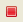
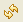
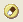

This page describes how to use the TailView View.
Contents |
Introduction
The TailView View (shown below) is a logging tool that displays the output of any process that generates log files. You can view multiple logs in different tabs and easily navigate through your logs using the TailView View.
{kind=link}
Instructions
Displaying the TailView View
To display the TailView View:
- From the Window menu, select Show View > Other... to open a Show View window.
- On the Show View window, expand the Aptana Views folder.
- Select TailView and click OK.
Aptana displays the TailView View.
Displaying a server log in the TailView View
To display a log for a server in the TailView View:
- In your Servers View, right-click the server that you want to display the log for, or select the server and click the Open Log
 button.
button. - From the context menu, select Open Log.
Aptana Studio displays the TailView View with the log file for the specified server open.
Adding a log file to the TailView View
You can watch multiple log files at once through the TailView View.
To add a log file to the TailView View, click the Add Log button and browse to the location of the log file.
{kind=link}
Aptana will display the log file as a tab in the TailView View. Each log that you have open will display in a different tab.
Navigating your log tabs
Click the Move Left or Move Right buttons to navigate through the tabs displaying your log files.
{kind=link}
{kind=link}
Starting, stopping, and managing logs
Use the buttons on the TailView View toolbar to stop, start, and manage your logs:
- To start watching on a log file, open the log in the current tab, and click the Starts Watching button.
- To stop watching on a log file, open the log in the current tab, and click the Stops Watching  button.
- To reload a log file, open the log in the current tab, and click the Reload Log  button.
- To clear a log file, open the log in the current tab, and click the Clears Log  button.
- To erase a log file, open the log in the current tab, and click the Erase Log button.
- To delete a log file, open the log in the current tab, and click the Deletes Log button.
- To delete a log all tabs, click the Delete all tabs button.
- To lock the scrollbar for a log file, open the log in the current tab, and click the Scroll Lock button.
- To customize your log colorization, click the Color Settings button.
{kind=link}
{kind=link}
{kind=link}
{kind=link}
{kind=link}
{kind=link}
{kind=link}
{kind=link}
{kind=link}
Related Topics
- Displaying the Servers View
- About the Jaxer server
- Getting Started with Jaxer in Aptana Studio
- Creating a new Jaxer project
- Previewing a Jaxer project
- About Jaxer Views
- Configuring your Jaxer servers
- Setting your TailView preferences
- JaxerManager_Command_Line_Interface_(CLI) Reference
- Running the Jaxer server diagnostic tools